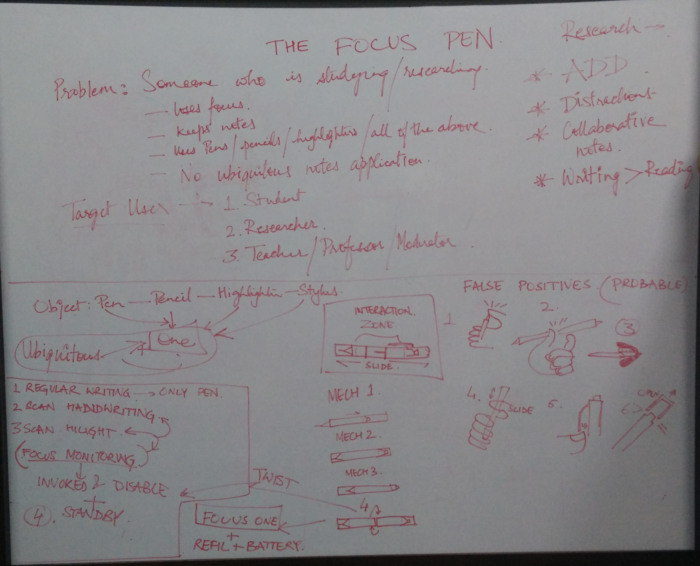
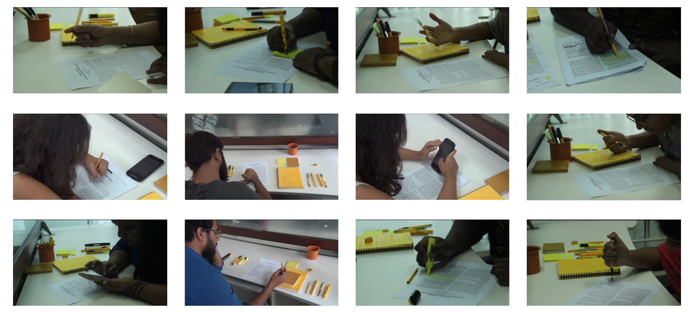
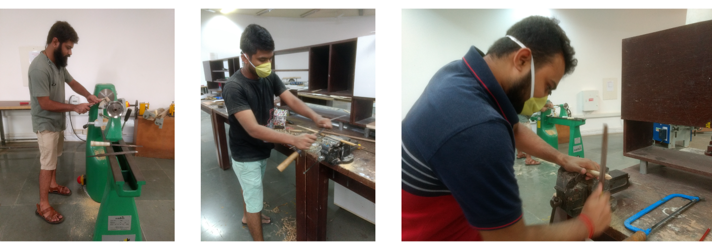
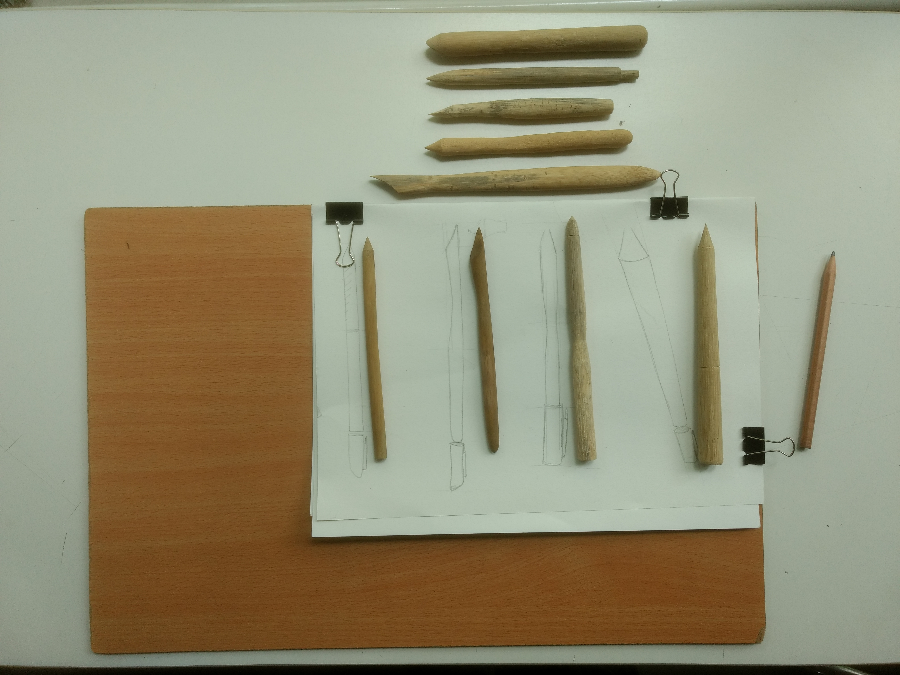
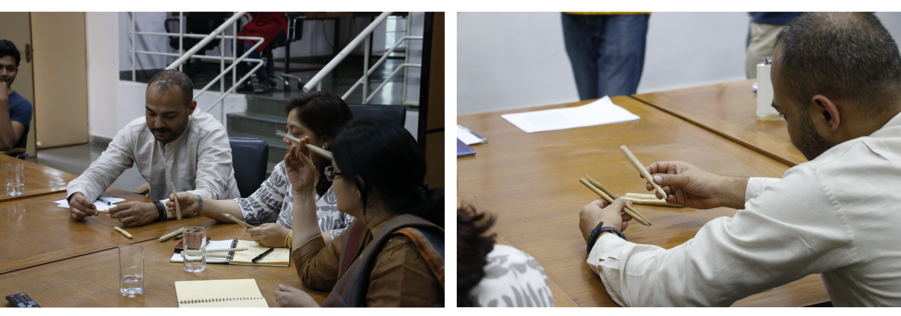
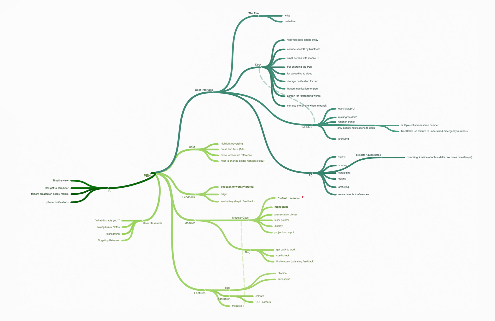
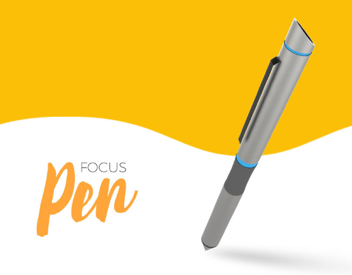
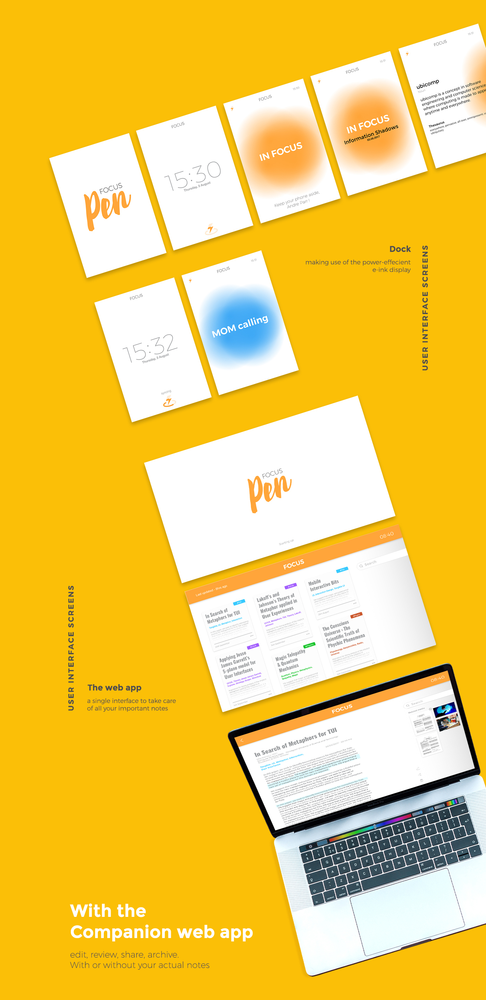
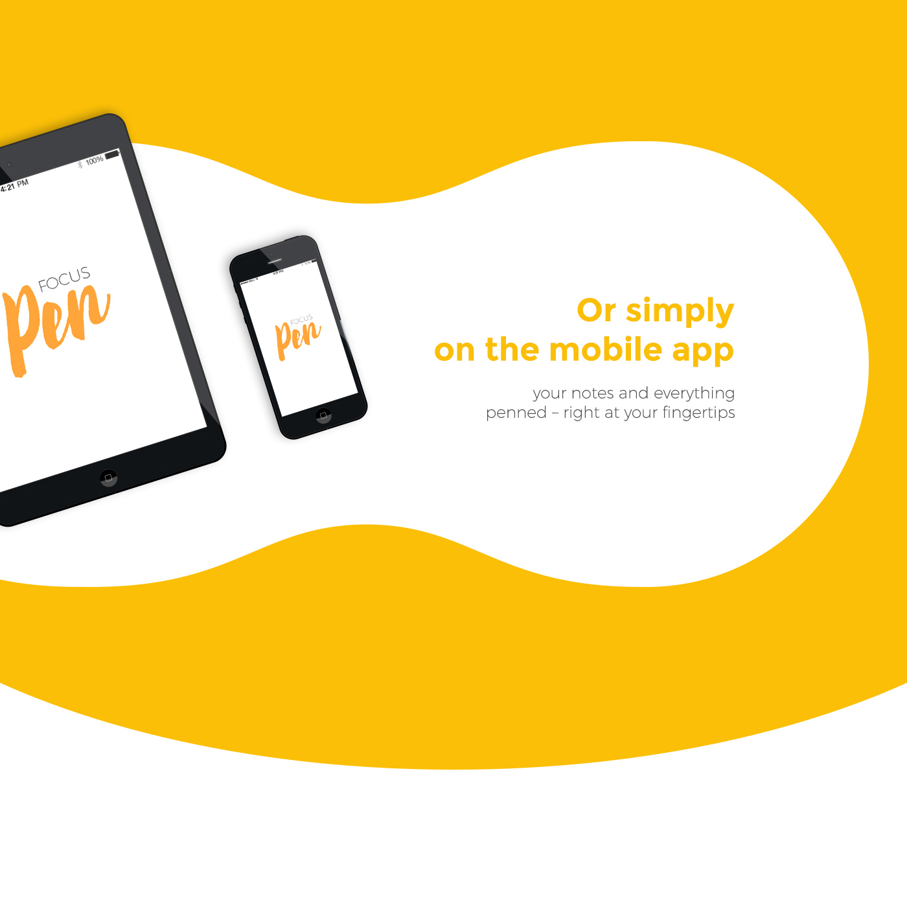

The Focus Pen : Future of Digital Note Taking
About the project
The project is the outcome of a classroom project in Ubiquitous Computing
module, in July 2017, of a duration of 3 weeks, at the National Institute
of Design - Bengaluru, India.
As a part of the curriculum, the students were required to read a lot of
research papers as reading material to build an understanding of what Ubiquitous means?
We observed that most of the classmates spoke about the struggle and frustrations; at maintaining
focus and being constantly zoned out while comprehending the information in those materials.
Bro! I can not read through the papers, I am getting zoned out every now and then while reading them.
The Problem
Not being able to maintain FOCUS and comprehend the information available in printed reading materials by the students / researchers.
My Team and My Role

From left to right: Andre Parr, Hemant Gupta and Akshay Khurana.
We were a team of 3 students from Interaction Design : Akshay, Andre and I - who had different strengths in 3D modelling, graphic design and user research respectively.
In this project my roles and responsibilities were
- observing user behaviour which resulted into identifying the lack of focus as a pain point;
- taking care of the user research which covered conducting user interviews
- planning and executing the user experiments
- helped in building the physical prototype (explored different materials: Bamboo, MDF, Acryllic etc)
- contributed in storyboarding and shooting of the use-case scenario video
Working with this team helped all of us to learn from each other's strengths.
Understanding
We started off with initial discussions amongst ourselves to build an understanding of
- What is Ubiquitous Computing (or Ubicomp)? and
- What could be the desired product to qualify as a ubicomp product?
We found ubicomp is an IoT concept which enables computing by taking inputs from anywhere, at anytime, using any device and outputs data in any format necessary.
While looking for answers to what could be an ideal device to solve the problem at hand, we realised that a pen / pencil is the most versatile and widely used object in the context i.e while studying. Users generally used pen / pencil for taking notes, making annotations, traversing between lines while reading, or just to fidget.
Therefore, we thought of rethinking the idea of note taking and research by reimagining the pen as a connected device.
Whiteboard discussions.
Our Approach
Since, this particular module was for a small duration of 3 weeks only therefore we decided to make use of following steps :
- Design and conduct an user experiment (in a controlled environment )
- Identifying pain / gain points of using pen or pencils from above experiment study
- Quick prototyping
- Feedback and Iterate
The user experiement was designed in such a way that it comprised of 2-3 primary research methods:
- Personal Interviews
- Contextual Inquiry (in a controlled environment)
- Observations
In which we invited various students from different departments of our college as participants.
User experiment designed & conducted by Hemant; sessions recorded by Akshay & Andre.
Observations / InsightsBased on the experiment study conducted in a controlled environment, following observations were made: (important ones are emphasised)
- Some users don’t want to defile the document
- Puts pen back in its dedicated space
- Fidgeting speed relative to concentration
- Google search on mobile used to look up words
- Some use a notebook/some write in the margins for note-taking
- Mobile phone is a major distraction
- Preference of pencil is observed among most users
- Use the pen to traverse the reading
- One user used sticky notes
Quick Prototyping
To get a better understanding of form factor of a pen / penci, we dicided to design / sketch different pen forms which could take care of the insights discovered from our primary research. We made 9 pen prototypes using bamboo, and went back to our users (in this case, students) to see their reactions and use behavior with new forms.
 Sketches by Andre; prototypes made by Akshay, Andre and Hemant.
Feedbacks and IterateAfter few discussions with our primary users (students / researchers), we presented our concept to faculties and seeked their feedback. All these excercises helped us iterate and decide upon the final form of the pen and also made us realise the need for a companion dock.
We then proceeded with mind-mapping of the various components and features that the proposed product should have.
Made using Coggle. [Please zoom-in to view the map clearly.]
Our Solution : The Focus Pen + Companion Dock
As the end deliverable for this project, we proposed a bus service i.e. a business model, which brings complementary brands in the well-beign domain as collaborators, for operating a special bus service for mid to higher management level executives.
Product's eco-systemAfter few discussions with our primary users (students / researchers), we presented our concept to faculties and seeked their feedback. All these excercises helped us iterate and decide upon the final form of the pen and also made us realise the need for a companion dock.
Tangible User InteractionsAfter few discussions with our primary users (students / researchers), we presented our concept to faculties and seeked their feedback. All these excercises helped us iterate and decide upon the final form of the pen and also made us realise the need for a companion dock.
User Interface DesignFor this module at NID, as interaction designers we were expected to learn about designing AR/VR experiences. Keeping that in mind we explored to design for the virtual reality mockup, where we made use of the VR-Grid and VR Storyboarding Guidlines. This made us understand how to sketch in 360 degree equi-rectangular grids.
 
UI screens designed by Andre; Information Architechture by Andre and Hemant.
To demonstrate the interior of the HOP-UP bus while it is in transit or when parked stationary, we designed the HOP-UP bus using SketchUp (a modelling software), which also had a great assets repository to work with. It took me a bit of trial and error to get the hang of it, and the below two walkthroughs are results of that new learning.
Key Takeaways
- This particular project, allowed me to use my 1 year of gained theoretical knowledge of user research into practice. From User Interviews, Contextual Inquiry, to On-field observations.
- Got acquainted to the domain of service design / business model; which is something I find really interesting and challenging at the same time.
- Tried my hands on designing the VR mockup prototypes, which exposed me as an Interaction Designer to a completely new process of making VR Experiences.
- Based on final feedbacks from faculty and reviewers, we found there are gaps in the service model of the project in terms of :
- Service blueprint of a particular use case scenario.
- Interaction touch points between employees and customers!
- How money is being managed in the overall scheme of things?
These were very valid comments and made us learn a great deal about the process of service design.